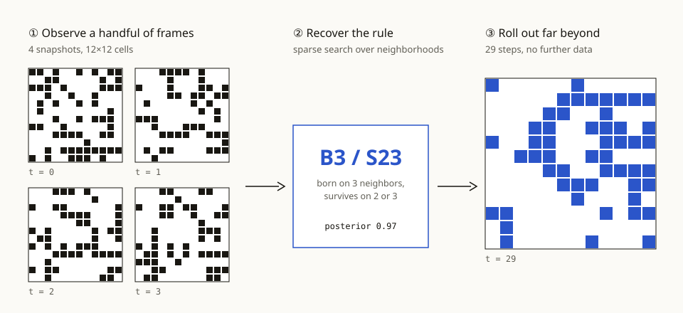
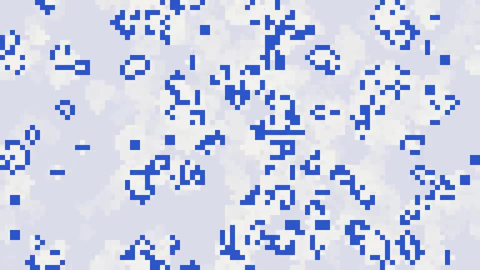

SpotlightConference on Example Learning 2026
Learning the rules from a handful of frames
Rulebook watches four snapshots of a cellular world and writes down the exact rule that produced them. The recovered rule rolls the world forward hundreds of steps without drifting, where neural simulators trained on a thousand times more data fall apart within twenty.
Most world models learn to imitate what happens next. Rulebook learns why it happens.
Learned simulators predict the next frame well, then drift: small errors compound until the rollout no longer resembles the world. We argue that for worlds governed by simple local rules, the right output is the rule itself.
Rulebook frames rule discovery as sparse search over neighborhood functions, scored by how exactly each candidate reproduces a handful of observed frames. On twelve cellular worlds it recovers the true rule from four snapshots in eleven of them, and its rollouts stay above 99% cell accuracy for 500 steps.
01From four frames to one rule

Search, don’t regress
Each candidate rule maps a cell and its eight neighbors to the cell’s next state. Instead of fitting a network to approximate that map, Rulebook enumerates the 218 outer-totalistic rules and keeps those consistent with every observed transition, breaking ties with a simplicity prior.
Because the output is a symbolic rule, it can be read, verified, and run at any grid size. The same rule runs unchanged on a 12×12 grid or a 4096×4096 one.
02Rollouts that don’t drift
From four frames, Rulebook returns the ground-truth rule in eleven of twelve worlds; the twelfth is an equivalent rule on the observed states.
Neural simulators fall below 90% cell accuracy after about 20 steps. Rulebook stays above 99% for 500.
The full search over 262,144 rules runs in under half a second, with no training run.
A 500-step rollout
Side by side

When a world is generated by a short program, recovering the program beats imitating its output, by orders of magnitude in data and in rollout length.
03Cite this work
@inproceedings{example2026rulebook,
title = {Rulebook: Learning the Rules of a World from a Handful of Frames},
author = {Example, Ada and Placeholder, Ben and Sample, Chiara and Demo, Dev},
booktitle = {Conference on Example Learning},
year = {2026}
}